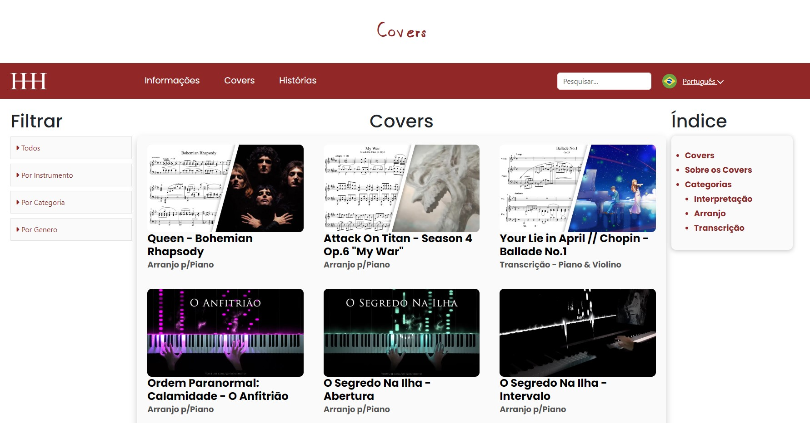

Qual o conteúdo desse site?

 Página de Covers
Página de Covers
Página de Covers

 Página de Obras Autorais
Página de Obras Autorais

 Página de Fotografias
Página de Fotografias
Este site possui uma homepage principal, contendo os cards que levam para as páginas específicas de covers, obras autorais e fotografias. Cada página possui sua própria identidade visual separada por cores.
Por que esse site foi desenvolvido?
Este site foi criado como parte de um projeto autoral, com o objetivo de aprimorar minhas habilidades no desenvolvimento de aplicações web front-end. O conteúdo é original e foi pensado para estimular a criatividade, proporcionando uma experiência que combina aprendizado técnico com design e inovação.
O que foi utilizado na construção desse site?


Para a construção desse site foi utilizado HTML, CSS, JavaScript, PHP e Photoshop para edição e personalização de imagens. Também foram utilizados ícones da FontAwesome e Lucide Icons.